Step-by-step logo
BY CHUCK GREEN I don't know about you but I love to see examples of how other designers work—they reveal better (or worse) ways of doing things and allow me to gauge whether my methods are mainstream or totally whacked-out. “If anyone finds out how I obsess about this stuff,” I tell myself, “they'll stick me in a home.”
The problem is that step-by-step examples are rare. Why? Mainly because unless you are interested in sharing such information, there isn't much reason for recording it. And even if you are, detailing the steps can get in the way of the process. If I'm ready to move to the next stage of an idea, I am normally not interested in recording what I've done to get there.
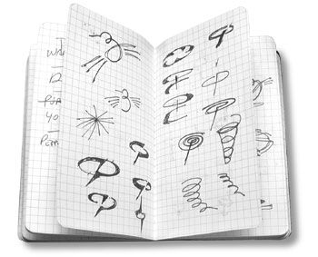
The good news is I rarely let normal get in my way. What follows are some of the steps I took to create a recent logo. I saved some of the graphics I created along the way and have attempted to recall a little bit about what I was thinking. There is, of course, more to a logo design process than what you see here—this exercise includes little about the typical ramp up of preliminary discussions, research, and so on—space, time, and vanity limit me to showing just a portion of the process.
I don't know about you, but I start out on paper. I find it most productive to sketch out ideas in a notebook. A Moleskine notebook is my weapon of choice—its small and sturdy enough to carry in my back pocket. (I like them so much I sell the plain and horizontal-lined flavors in the ideabook.com store— found the graph version shown here a little noisy for me.)
I'm most concerned with concepts at this stage—not designs. To my way of thinking, designs emerge from concepts, concepts do not emerge from designs. My goal in creating a logo is, at best, to demonstrate the benefit of using the product or service and at minimum to create a visual symbol of the subject matter.
I often show my clients those rough ideas. I have found that getting feedback on basic concepts is best for everyone involved. It allows us to weed out ideas that look good to me but don't work for the client. It acknowledges that the client knows the subject best, no matter how much research I do.
What may appear to me to be a great solution to the problem sometimes just doesn't work for reasons I could not be expected to know.
The logo I'll discuss here was designed for a helicopter transport company—Metro Aviation. I started by going through my sketches and choosing the concepts I thought had most merit.
Step 1 (below) > I created some slightly tighter
drawings of five of the ideas—the first, something to symbolize the
basic rotor and lift dynamics.
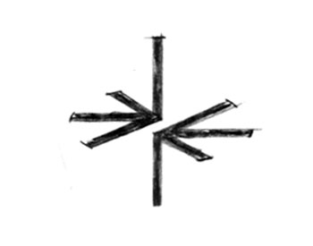
Step 2 > Second is a helicopter with bird wings. Yes it's ugly (looks like a bat-copter)—but we're just exploring concepts, not designs.
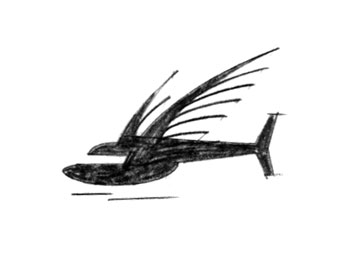
Step 3 > Next, a more realistic rendition of a copter integrated with the type—perhaps a flyover where the aircraft casts a shadow in the letter form.
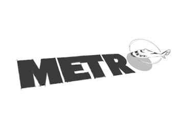
Step 4 > From the outset, the client expressed an interest in using a hummingbird as a symbol for the helicopter so I began to explore that idea as well.
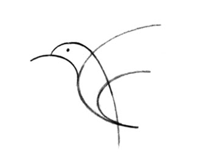
Step 5 > The problem with the hummingbird was that, as I began doing research, I found lots of other helicopter companies were using something similar as their mark.
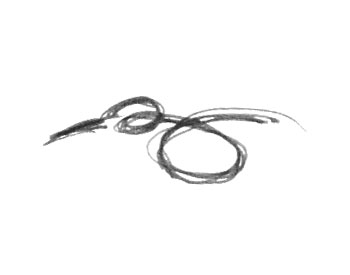
Step 6 > That didn't rule it out, it just meant I would have develop the idea further to make it distinctive. To me, this version looks a bit more like its hovering.
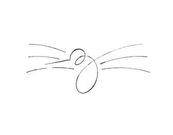
Step 7 > But it was this design that made me think,
“I'm onto something,”—the combination of the hummingbird, the implied
motion of hovering, and the additional visual element of rotation added
the extra something I was looking for.
My confidence was strengthened further when the client chose it from the lineup.
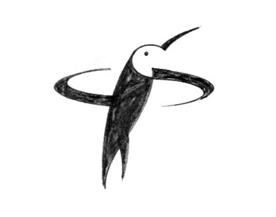
Step 8 > The rest, as they say, is history. The idea of the hovering bird stuck and I began to develop a design. First, I gathered together some photographs so that my actual design would reflect the correct proportions and positioning.
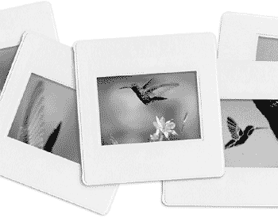
Step 9 > Research is crucial. If some aspect of your subject is inaccurate, you can waste amazing amounts of time pursuing a design your client will reject out of hand. In this case, you can see how different the beginning shape of the actual artwork (right) is from my original sketch (left).
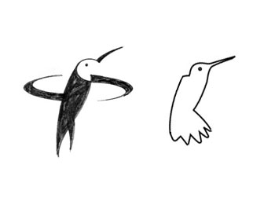
Step 10 > The problem with logo design is you have to create finished art or something close to it to communicate your idea. I may tweak it after I get the client's okay, but I've got to be 95 percent finished with the art to sell it to the client. My software of choice is Adobe Illustrator. Here, I started by roughing out the body.
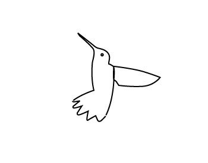
Step 11 > I created the feathers using a series of ovals.
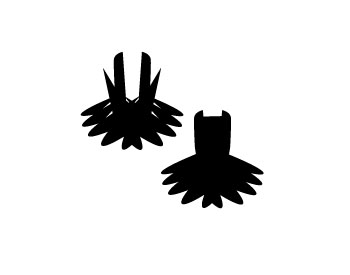
Step 12 > Then I rotated the body and wing into hovering position.
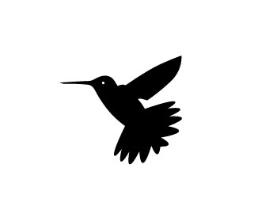
Step 13 > You have to mine a lot of rocks to find the gold. This is one of many ideas I experimented with in my attempt to show “rotation.” Really awful isn't it?
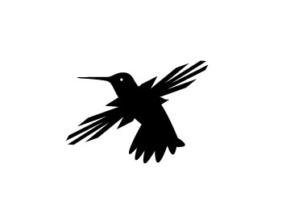
Step 14 > What seemed to work best was to use some type of oval to simulate the blur of the blades.
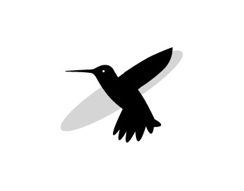
Step 15 > Even better was a swirl. I took this clip art element...
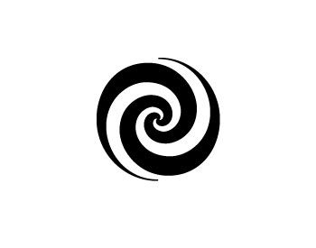
Step 16 > and scaled it down vertically. Then I tilted the bird's body back to a vertical position so I was sure to get it centered correctly. What follows are variations of this basic design.
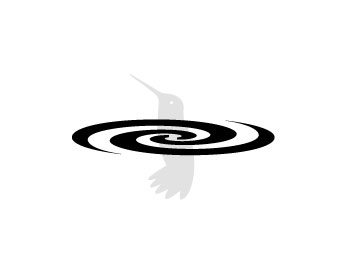
Step 17 > First, I added color and used the top of
the swirl to define the division between the bird's body and its head. I
also added a slight gap between the bottom of the swirl and the tail to
accentuate the division between the swirl and the body. Finally, I
added another oval below to act as a shadow.
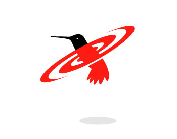
Step 18 > Dividing the swirl into two colors helped to further accentuate the swirling motion.
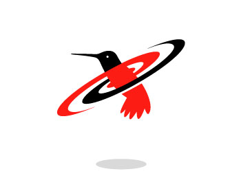
Step 19 > I tried adding another shape as if the swirl were casting a shadow on the lower body. It works, but I thought it was getting a little too complex.
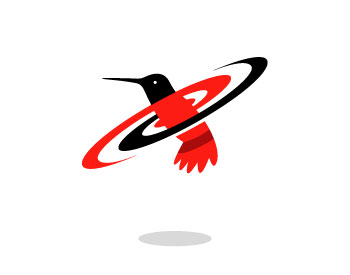
Step 20 > And I tried changing the black swirl to gray.
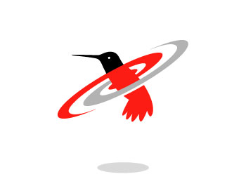
Step 21> This version includes a couple of light gray shapes I thought might give the image a little more of a sense of movement—nope.
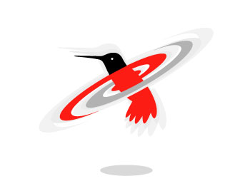
Step 22 > I finally settled on filling in the spaces between the bird's body and the swirl. My thinking was to simplify the final version as much as possible and, for me, removing the negative space helped.
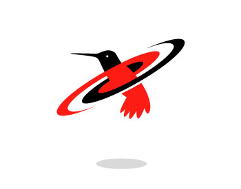
Step 23 > I was actually really happy with this
basic design. I even went so far as to work it into a business card
layout using the colors the client requested.
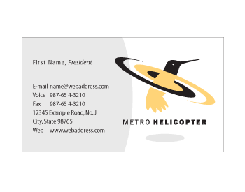
Step 24 > But here comes a reality check. The client decided the idea of hovering just wasn't convincing enough. He liked the design but thought the hovering motion would be more true to form if it was above the body as it would be on a helicopter.
Wow. Its always difficult to hear when a client isn't as excited about your solution as you are. But I can tell you the axiom “the customer is always right” is always true. At least if you want to stay in business.
I could spend the time necessary to provide the client with carefully considered, well-spoken reasons for going with what I created, but clients are no different than designers—if it doesn't work for you, it doesn't work for you—period.
Step 25 > So back to the drawing board. How do I glue these pieces together in a way that works?
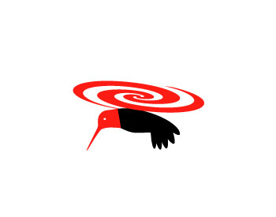
Step 26 > First, I had to re-think the wings. The swirl took the place of the wings so I had to get them back in there.
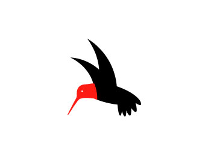
Step 27 > That worked for me, but the swirl didn't.
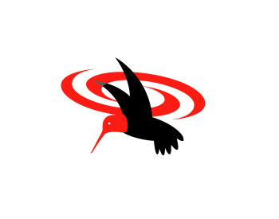
Step 28 > I needed something simpler. A solid shape? Nope too massive.
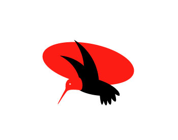
Step 29 > Again, I found simpler better. It worked for me and, more importantly, it was just what the client wanted.
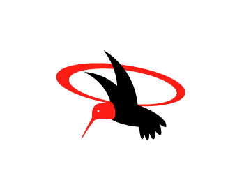
Step 30 > Next, I adjusted the colors to match the helicopter color scheme (blue and yellow) and added the shadow.
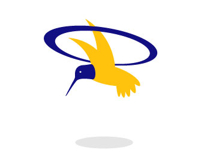
Step 31 > The final hurdle was the tail. We tried several different versions. One...

Step 32 > Two...
Step 33 > Three...
Step 34 > and four...
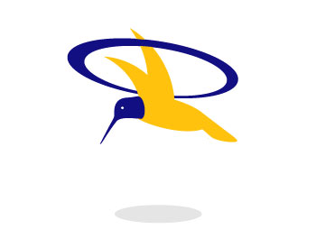
Step 35 > I like it when clients push. Though I may cry and moan to myself at the time, more often than not, we end up with a better solution. That said, in this case, I personally prefer the interim solution, but then I'm not paying the bill.
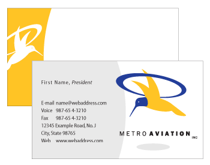
Logo design is legalized gambling. When I take on a project I don't know if it will take eight hours or five days. In fact what I've shown you here is the tip of the iceberg. To the right, in PDF form, is a summary of some of the many iterations of the logo.
Though it is a challenge from all sides, there is nothing quite so
exciting for a designer than discovering, developing, and implementing
an image that becomes the visual representation of an entire
organization.